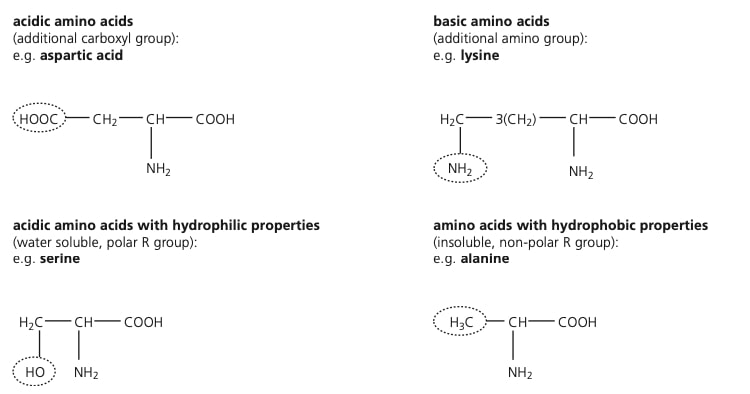
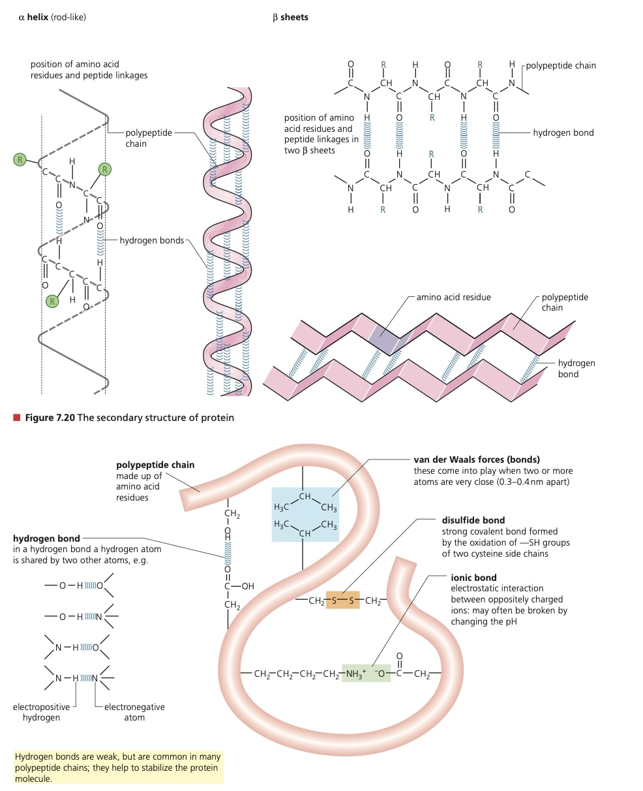
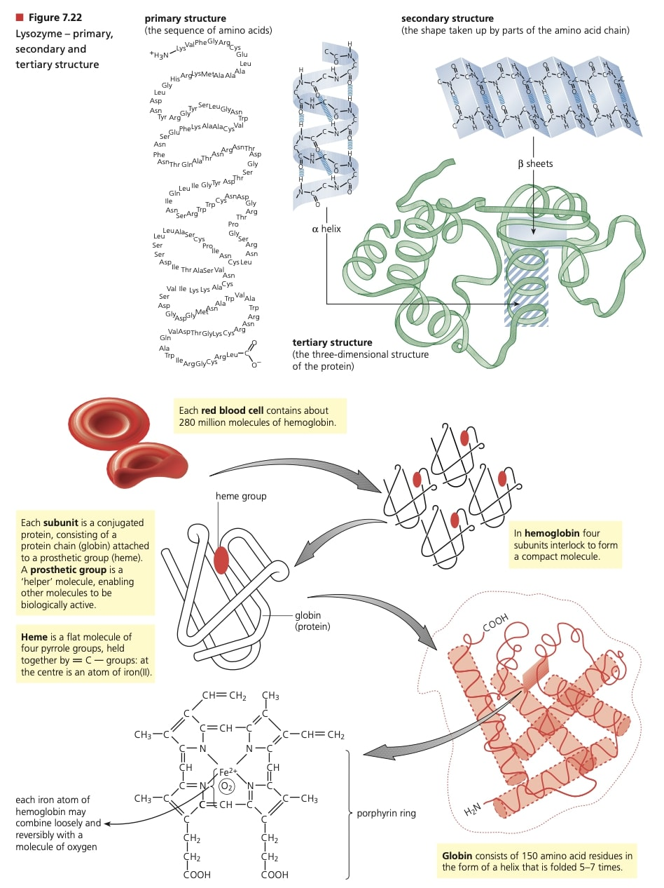

7.1 DNA Structure and Replication
Nucleosomes and Supercoiling
DNA occurs in the chromosomes in nucleus, along with protein, more than 50% of a chromosome is built of protein. Some of the proteins of the chromosome involves in copying and repairing DNA, many chromosome protein supports and packages DNA
This phenomenal packaging is achieved by coiling the DNA double helix and looping it around protein beads called nucleosomes

The packaging protein of the nucleosome, called histone, is a basic protein containing a high concentration of amino acid residues with additional base groups
8 histone molecules combine to make a single bead, DNA double helix is wrapped around each bead in a double looping
When nuclear divides, the whole beaded thread coiled up, forming chromatin fiber, chromatin fiber coiled again, the coils are looped around a 'scaffold' protein fiber, made of a non-histone protein
DNA as Information Molecule
The unique importance of DNA was proved by an experiment with a bacteriophage virus. A bacteriophage(or phage) is a virus that parasitizes a bacterium. A virus particle consists of a protein coat surrounds a nucleic acid core
Once a virus enters a cell, it takes over cell's metabolism, switching to new virus production, the remains of cell breakd down and new virus particles escape, repeat infection cycle

Base Pairing in the DNA Molecule
The numbers of purine bases(adenine and guanine) = The number of pyrimidine bases(cysosine and thymine)
The numbers of adenine bases = The number of thymine bases, The numbers of guanine bases = The number of cytosine bases
Cytosine and thymine are pyrimidines or single-ring bases, adenine and guanine are purines or double-ring bases
'Direction' in the DNA Molecule
Phosphate groups along each strand are bridges between carbon-3 of one sugar molecule and carbon-5 of the next
One chain runs 5' to 3' and other runs 3' to 5', two chains of DNA are antiparallel

Sequencing DNA
Protein-coding sequences of our DNA account for only approximately 1.5%, reminder include some DNA sequences that regulate the expression of protein-coding genes
70% of DNA is extensive 'non-gene' regions of eukaryotic chromosomes

Introns: non-coding nucleotide sequences, one or more of which interupts the coding sequences(exons) of eukaryotic genes
Telomores: special nucleotide sequences, consisting of multiple repetitions of one short nucleotide sequence, occur near the ends of DNA molecules and 'seal' the ends of the linear DNA, here genes stop erosion that occur each replication
Genes for transfer RNA(tRNA): DNA templates that code for elatively short lengths of RNA that are formed in the nucleus and pass out into the cytosol
Major lengths of non-coding DNA: short sequences of bases repeated times, known as 'variable number tandems repeat' regions(VNTRs), use in genetic fingerprinting
Replication-DNA Coding Itself
Replication is seperate from cell division(replication of DNA takes place in interphase)
DNA double helix strand built up from free nucleotides. Before nucletodies condense, DNA double helix has to unwind, breaking hydrogen bonds, allowing two strands of helix to seperate. Enzyme helicae brings unwinding process and holds strands apart
Both strands act as template, nucleotides with appropriate complementary bases line up opposite the bases of exposed stands(A-T,C-G). Hydrogen bonds form between complementary bases, hold nucleotides in place
Enzyme DNA polymerase catalyse sugar and phosphate group of adjacent nucleotides of new strands to condense together(5'->3' direction). Two strands of each DNA molecule wind up into a double helix
One strand of each new double helix came from parent chromosome, other one is newly synthesized strand, an arrangment 'semi-conservation replication' because half the original molecule is conserved
DNA polymerase 'proof read' the new strand, correct mistakes

.jpg)
7.2 Transcription and Gene Expression
DNA Transcription
Transcription occurs in the nucleus. During transcription, a complementary copy of information is made by the building of a molecule of messenger RNA (mRNA), DNA triplet codes are transcibed into codns in the mRNA, catalysed by enzyme RNA polymerase
One strand od DNA catalysed by enzyme RNA polymerase. One strand of DNA double helix serves as template for synthesis of mRNA, called antisense or coding strand
DNA double helix first unwinds(break H-bonds), enzyme RNA polymerase binds it to a promoter region(the 'start' signal for transcription).RNA ploymerase draws on the free nucleotides(present as nucleotide triphosphates)
Polymerase enzyme matches free nucleotides (A-T,C-G), 5'-> 3' direction. Each selected free nucleotide joins onto mRNA strand by condensation reaction. Process continues until a base sequence - transcription termination region is reached
RNA ploymerase and new strand mRNA free free from gene site, mRNA leaves through pores in nuclear membrane and passes to ribosomes(place to 'read' and 'use' info)

Discontinuous Eukaryotic Genes
The sections of the gene that carry meaningful information(code for amino acids) are exons. The non-coding sequences that intervene-interruptions, are introns
An enzyme-catalysed reaction, 'post-transcription modification', removes introns as tje mRNA has been formed.
Short lengths of 'non-sense' transctibed into the RNA sequence of bases are removed known as RNA splicing and resulting shortened lengths pf mRNA are mature

Regulation of Gene Expression

Regulation of Eukaryotic Genes
1. Regulation and Chromation Structure
DNA in the nucleus is packaged with proteins in a complex known as chromatin, much-coiled DNA double helix of each chromosome is looped around histone protein beads
The ends of histone protein molecules project outwards for the nucleosomes/ Histone 'tails' may be chemically modified by enzyme, by addition/removal an acetyl group

2. Regulation by Enhancers and Transcription Factors
In eukaryotes, before mRNA can be transcribed by the enzyme RNA polymerase, it first binds with a small group of proteins cakked general transcription factors at a sequence of bases as promoter
Promoter regions occur on DNA strands just before the start of a gene's sequence of bases(pormoter is an example of a length of non-coding DNA with a special function)
When transcription complex of proteins(enzyme + factor) has assembled, can transcription of the template strand of the gene begin
Once transcription initiates, the RNA polymerase moves along the DNA, untwisting the bhelix ad it goes and exposing the DNA nucleotides. DNA nucleotides can pair and mRNA strand can form anf peel away
Rate of transportation increases/decreases by binding of specific transition factors on enhancer. When activator proteins bind to this enhancer site, a new complex is formed and makes contact with polymerase-transition factor complex, increasing rate of gene expression

3. Methylation and Epigenetic Inheritance - Analysing Patterns
Methylation is the reversible addition of a methyl group within the chromatin, possibly to histone tails, but usually to the DNA molecule itself
Enzymes bring about this addition to the base cytosine, the addition occurs when DNA is wrapped around histone. The methyl groups persist in situ from cell division to cell division

Alternative Post-Transcription RNA Splicing
After transcription, remaining lengths of mRNA(exons) may be spliced together in different combinations. The consequence is a single gene codes for more than one type of polypeptide

7.3 Translation
In the eukaryotic cell, the mature mRNA strand leaves the nucleus through pores in the nuclear membrane and passes to ribosomes in the cytoplasm. Here, information transferred from DNA to mRNA is translated into amino acid sequences of proteins
Assembly if the Components of Translation
Amino acids are activated for protein synthesis by combination with a short length of a different sort of RNA, tRN. tRNAs molecules have a clover-leaf shape, but differe in sequence of bases(anticodon)
The enzyme catalysing the information of the amino acid-tRNA complex 'recognizes' only one type of amino acid and corresponding tRNA.

The anticodon allows the tRNA molecule to base pair with three complementary bases of mRNA of a tRNA binding site on a ribosome.
Each amino acid is linked to a specific tRNA before it can be used in protein synthesis by the action of a tRNA activating enzyme(there are 20 different tRNA-activating enzymes, one of each of the 20 amino acids)

The anticodon allows the tRNA molecule to base pair with three complementary bases of mRNA of a tRNA binding site on a ribosome.
Ribosomes-The Site of Protein Synthesis
A Site: the first site. A codon of the incoming mRNA binds to specific tRNA-amino acids through its anticodon(complementary base pairing)
P Site: the second site. The amino acid attached to its tRNA is condensed with the growing polypeptide chain by formation of a peptide linkage
E Site: the third site. The tRNA leaves the ribosome, following transfer of its amino acid to the growing protein chain

The Assembly Cycle of Polypeptide
Initiation of Translation
Begins when mRNA molecule binds with the small ribosomal subunit at an mRNA binding site. Initiator tRNA join at the start codon 'AUG", followed by attachment of a large ribosomal unit unit, initiator occupies P site
Next codon of tRNA in A site is available to an anticodon, its arrival brings two activated amino acids and polypeptide forms by condensation reaction
Elongation of the Peptide
The ribosome moves three bases along the mRNA. tRNA in P site moves to E site, is released, next codon occupy A site
Brings an amino acid to lie alongside, held close together, another peptide bond is formed. Ribosome progresses along mRNA molecule in 5'->3'direction, a polypeptide is formed and merges from the large subunit

Polysomes
Several free-floating ribsomes move along the same mRNA strand at one time, the resulting strcuture is called polysome
Post-Translational Modification of Protein
Many proteins are produced in the form of inactive precursors, which require processing steps, these steps occue after translation, known as post-translational modifications
It is important for proteins to become active only at particular sites, i.e. protein-digesting enzyme trypsin produced in pancreas in inactive form(trypsinogen) so doesn't digest proteins of pancreas cells

Proteins
The reactive/functional groups of amino acid molecule are the basic amino group and the acidic carboxyl group, both attatched to the same carbon atom
Side chain/R part may be very variable


Legal disclaimer: All images are uploaded as copyright-free or original work by the creator. These are not for reproduction or reuse on external sites. Please contact us if you have any concerns.

Creating tools to help students through our online platform. Developed independently by students, not affiliated with/endorsed by any academic institution. © The Anonymous Helpers 2023.